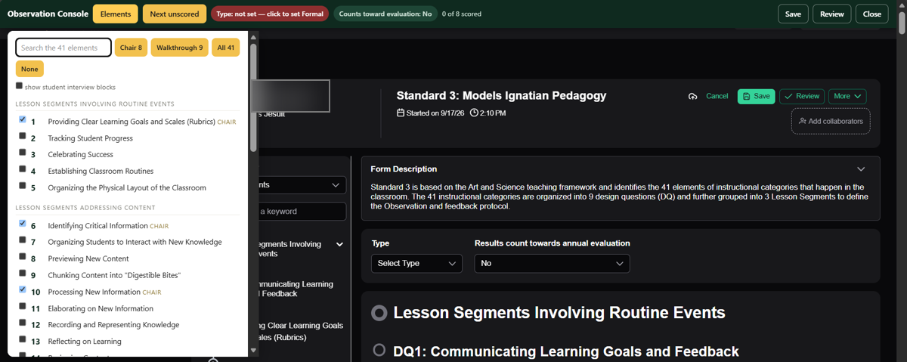
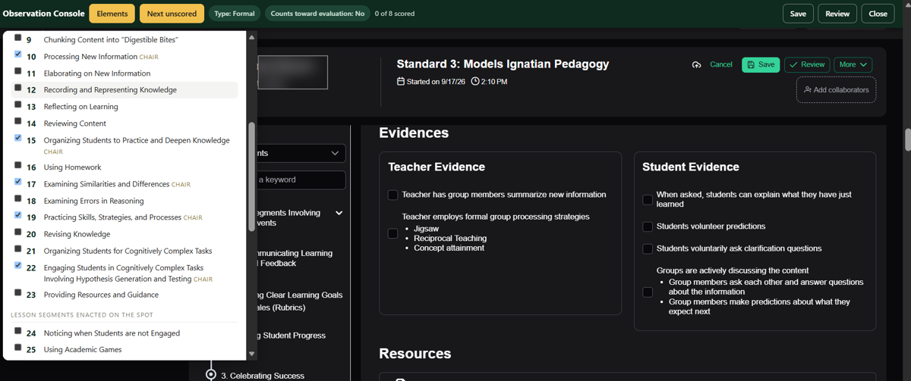

Regis Jesuit · Educational Technology · for chairs and administrators
The observation form, showing only the elements you came to watch
For the chair or administrator filing an observation.
The Conduct an Observation screen puts 41 elements and several hundred
checkboxes in front of you before you have written a word. This hides the ones you are not
using, puts the eight chair elements one click away, and brings the rubric out from behind
the View Scale panel so you can read Applying and Developing side by side while you
decide.
Nothing leaves your computer, and nothing is submitted. This rearranges
the page already open on your screen. It never ticks a box, never writes a comment and never
presses Save — you do all of that yourself, in the real form underneath. Close it and
the form is exactly as it was.
Put the button on your browser
Once, about twenty seconds. The worst that can happen is you delete a bookmark and try
again.
Drag the button below onto your bookmarks bar
That is the row just under the address bar. Click and hold, move up to that row, let go.
Do not click it — drag it.
Check it landed
You should see Observation Console up there with your other bookmarks. That is the
whole setup.
Drag me up to the bookmarks bar — clicking me here does nothing.
I don't see a row of bookmarks under the address bar
It is hidden. Hold Ctrl and Shift and press B and it
appears. (On a Mac: ⌘ShiftB.) The same keys hide it
again afterwards.
The drag won't work
Use this instead. Same result.
Press Copy below.
Press CtrlShiftO to open the Bookmark manager.
Click the three dots at the top right, then
Add new bookmark.
For Name type Observation Console. Click in the
URL box and press CtrlV to paste.
Save, then close that tab.
Loading…
How to use it
Open the observation
From the iObservation home page, Conduct an observation — pick the
teacher, pick Standard 3: Models Ignatian Pedagogy, press Start. Or press
Continue on a draft you already began. Let the form finish loading before you
do anything else.
Click Observation Console on your bookmarks bar
A dark green bar appears across the top, and the form immediately drops to the eight chair
elements. Everything else is hidden, not deleted.

Press Elements to choose what you are watching for. Every one of the 41 is
listed and searchable, the chair eight are marked CHAIR, and the four buttons set a
whole list at once. Tick one to show it, click its title to jump straight to it on the form.
Your choice is remembered, so next time it opens this way. Notice the red chip in the bar:
Type: not set.
Clear the red chip
Click Type: not set and it becomes Formal. Check the chip
beside it shows the evaluation flag. Type opens unset on every observation, which is what
makes a draft show as N/A in the lists — the field sits above the elements and is easy
to scroll past. What you set these to is your call.
Work down the form as you normally would
Tick the evidence you saw, choose a level, write the comment. Every control you touch is the
real iObservation form — the console only decides what is on screen.

The chip now reads Type: Formal, and the count on the bar tracks your
progress. The form underneath is untouched iObservation — the same evidence boxes, the
same scale, the same comment editor. Next unscored jumps you to the next element you
chose but haven't rated.
The teacher's name is blurred in both pictures. These are real screens from a
real draft, which is why.
Read the rubric where you are deciding
Each element header carries a Show rubric button. Press it and the actual
scale text drops in under the checkboxes — Applying and Developing in full, the other
three greyed — instead of you opening and closing the View Scale panel. Press it again
to put it away.
Save or Review from the bar
Those two buttons press the form's own Save and Review, so you don't scroll back to the top
hunting for them.
Close when you're doneClose — or clicking the bookmark a second time — puts every
hidden element back and leaves the form exactly as it was.
If the bar doesn't appear, you are probably not on a Conduct an Observation
screen yet, or it hasn't finished loading. Wait a moment and click the bookmark again.
What the green bar gives you
Elements — the full list of 41, searchable, with the chair eight
marked. Tick to show, untick to hide, click a title to jump straight to it. Your choice is
remembered on that computer, so the next visit opens the way you left it.
Chair 8 / Walkthrough 9 / All 41 / None — one click each.
What I have done — your own observation history, read from
iObservation: how many you have finished since August, which teachers you have seen and when,
a month-by-month count, and any drafts you left open with their age in days. It works on any
iObservation page, not just the form.
iObservation's own element list on the left is filtered to match, so the
navigator and the form agree.
Type and evaluation flag — the bar shows both. Type unset goes red;
clicking it sets Formal. The second chip sets the evaluation flag to
No. Type opens unset, and an unset Type is what makes a draft show
as N/A in the lists. What you set them to is yours to decide.
Show rubric — on each element, drops the actual scale text in under
the checkboxes, Applying and Developing in full and the other three greyed. No panel to open
and close three times a visit.
Comment — jumps to that element's comment box and puts the cursor in
it. The box is taller than the vendor's.
Next unscored — scrolls to the next element you chose but haven't
rated yet, and the bar keeps a count.
Two levels ticked — the scale row is checkboxes, not buttons, so
nothing stops you marking two. If you do, the element says so in red.
The part it cannot help with
Applying and Developing describe the same strategy. The only difference is
whether you saw the teacher check that it landed. Beginning — not Developing — is
the level for a strategy done wrong or half done. That distinction is the one thing the screen
will never make for you, which is why the rubric text is sitting right there under the boxes.
Finding what you have already done
iObservation keeps all of this; it is just scattered. Four places, in the order you will want
them.
The console's own What I have done
Fastest. Click the bookmark on any iObservation page and press the button. Teachers you have
seen, most recent first, a count per month, and any drafts still open — with the
old ones flagged.
Observations › Conduct Observation, then toggle to Completed Observations
The menu item says Conduct, which is why nobody finds this — the second tab on
that screen is the archive. Name, status, observer, type, Date Submitted
(click the arrows to sort), form, and View on every row, plus a
Search user or ID box, a Filters button and paging.
It runs both directions: the observations you conducted and the ones
conducted on you, with the observer named on each row. A Needs Attention
badge marks the ones still waiting on the teacher.
Skip the clicks — bookmark these two. They open the right tab straight
from a cold start:
Past observations → ieobservation.com/app/observations#completed
Anything still in progress → ieobservation.com/app/observations
The difference is the #completed on the end. Without it you land on
Conduct, which is your drafts.
Observations › My Stats
How much, not which: a From/To date range, an Evaluative / Non-Evaluative toggle, a form
picker, and counts of observations and scores. Useful when someone asks how many you have
done this semester.
Reports › All ReportsMy Count of Scores by Form is yours — your scores by teacher and form, where
you were the observer. Completed Observations with Details and Element Scoring by
Observer sit alongside it.
Drafts are separate from all of that. Anything you started and have not
finished sits on the iObservation home page under Observations on Draft
Form, with a counter showing how long each has been open — visible to anyone who
can see the queue. The console lists them too, and flags anything over a week.
If the screen looks cut off, it is the zoom
iObservation's home page is built from fixed-height cards, and they do not grow with your
browser. At 100% zoom on a laptop the Observations conducted on me card shows
about two rows and clips the date column, and the draft list gets a horizontal scrollbar. Nothing
is missing — it is folded up.
Zoom out one or two steps — hold Ctrl and press
− (on a Mac, ⌘ and −). At 80–90%
the whole table fits and the cut-off columns come back. Ctrl0 puts it
back to normal.
Or scroll inside the card itself. Those little lists are longer than they
look — the scrollbar is inside the box, not on the page.
The full tables never clip. The Completed Observations tab is a real
page-width table, which is another reason to work from there rather than the home page.
The things worth knowing about this form
Type opens unset, every time. That is what makes a draft show as N/A in the
lists. The field is at the very top of the form, above the elements, which is why it gets
scrolled past.
Every element you score needs a level on it. Where the teacher sits on the
scale is the answer the observation is being asked for, so an element left rated-but-blank
isn't finished.
The scale row is checkboxes, not buttons. Nothing stops you ticking two
levels on one element, and the console flags it in red if two are on.
Applying versus Developing. Same strategy. The only difference is whether
you saw the teacher check that it landed. Beginning is the level for a
strategy done wrong or half done — not Developing.
No report reads comment text. Every report in the platform returns counts,
averages and distributions. The comment field is invisible to all of them — so whatever
the ticked boxes are meant to mean, the comment is the only place it can be said.
The message box at the bottom. Under Notifications, whatever you
type goes into the email the teacher receives. It is often the first thing they read.
Student interviews are optional. Nine blocks, one per design question,
hidden by default in the console. Leaving them blank costs nothing on a short visit.
When something is wrong
The site is ieobservation.com. The old
iobservation.com domain lapsed and now serves something else. Any old bookmark or
district document pointing there is dead.
Vendor support is 814-283-5804 — passwords, accounts, form changes.
Not the old 1-877 number.
The console stops working if the vendor changes the page under it. Tell
Educational Technology rather than working around it.
Privacy
No accounts, no login, no cookies, no personal data, no ads.
Nothing is transmitted anywhere. It reads the page already rendered on your screen.
The only thing it stores is which elements you like to see, in your own browser.
It cannot tick, submit or send anything. Save and Review press the form's own buttons when
you press them.
Nothing is logged, so there is no way for anyone to tell you used it.
If it stops working
The vendor can change the page under it at any time. If the bar appears but the elements do
not collapse, or Show rubric sits on loading, tell Educational Technology and
it gets fixed. If nothing at all happens, you are probably not on a Conduct an Observation
screen yet, or it hasn't finished loading — wait a moment and click again.
![Regis Jesuit]()